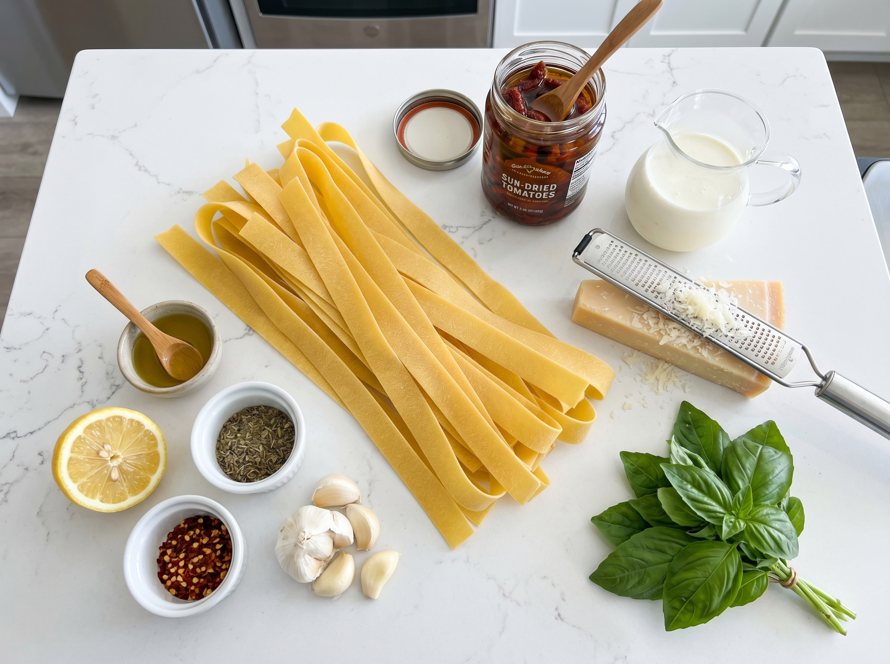

There's a jar of sun-dried tomatoes in your pantry right now — probably in oil, probably been there for three months, probably waiting for the right recipe. This is that recipe. Creamy sun-dried tomato pasta is the kind of dish that tastes like it came from a nice Italian restaurant, costs about $8 to make for four people, and takes literally 25 minutes start to finish.
The secret to the silky, restaurant-quality sauce isn't any special ingredient — it's the pasta water. That starchy, salty water is liquid gold that most people pour straight down the drain. It emulsifies the fat from the cream and the Parmesan, creating a sauce that coats every strand of pasta without being heavy or greasy. Set a measuring cup by your pot — do not forget to scoop that pasta water before you drain.
Why You'll Love This Sun-Dried Tomato Pasta
- Pantry-to-table in 25 minutes — Sun-dried tomatoes are a shelf-stable pantry staple. This whole recipe can be made with ingredients you probably already have.
- Intensely flavored, not just "creamy" — Sun-dried tomatoes are fresh tomatoes with most of their water removed, which concentrates the flavor dramatically. You get that deep, sweet-tangy tomato taste that regular tomatoes can't replicate.
- The oil in the jar is a bonus ingredient — That tomato-infused oil is used to cook the garlic and aromatics, adding another layer of flavor that you'd be crazy to waste.
- Vegetarian-friendly — This is a complete, satisfying meatless dinner. Add chicken or shrimp if you want protein, but it doesn't need it.
- Crowd-pleaser for picky eaters — Rich, creamy, and mildly garlicky. Even people who "don't like pasta" (do those people exist?) come back for seconds.
The Pasta Water Secret (Don't Skip This)
When pasta cooks, it releases surface starch into the water. That starch acts as a natural emulsifier — it keeps fat and water from separating, which is how Italian restaurants get that clingy, silky sauce that coats pasta instead of pooling at the bottom of the bowl.
Think of it like this: without pasta water, your sauce is butter and cream floating in a separate layer. With pasta water, those components bond together into one unified, glossy sauce. Add it slowly — a splash at a time, tossing vigorously. You'll see the sauce transform from thick and chunky to smooth and coating. This technique works for any pasta dish: carbonara, cacio e pepe, aglio e olio. Once you understand it, your pasta game changes permanently.
Ingredients
Sun-dried tomatoes are available at virtually every grocery store — Trader Joe's has excellent oil-packed ones (the ones in the jar, not the dry-packed bag), and Whole Foods carries several brands. For the pasta, any ridged pasta (penne, rigatoni, fusilli) grabs the sauce better than smooth ones like spaghetti — but use what you have.
Kitchen Tools You'll Need
- Large pot — For cooking the pasta. Use a large pot and lots of water so the pasta doesn't clump. Salt the water generously — it should taste "pleasantly salty," like mild seawater.
- Large skillet or sauté pan (12-inch) — Big enough to toss the finished pasta in the sauce. A wide surface area helps the sauce reduce quickly and evenly.
- Measuring cup or ladle — Set this by the stove before you start cooking so you don't forget to scoop the pasta water. This is the most commonly forgotten step.
- Microplane or fine grater — For the Parmesan. Freshly grated Parmesan melts smoothly into the sauce. Pre-grated cheese from a bag contains anti-caking agents that make the sauce grainy.
Creamy Sun-Dried Tomato Pasta
Restaurant-quality pasta in 25 minutes. The pasta water trick makes all the difference.
Ingredients

Instructions
- Cook pasta & reserve the water: Bring a large pot of well-salted water to a boil (it should taste pleasantly salty). Cook pasta per package directions until al dente — a tiny bit of bite left. Before you drain, scoop out at least 1 cup of the starchy pasta water and set it aside. Don't skip this.
- Prep the tomatoes: While pasta cooks, drain the sun-dried tomatoes but keep the oil. Roughly chop half of them into a paste-like consistency (you can use a knife or food processor). Slice the remaining half into strips. Having both textures gives the sauce body and visual interest.
- Build the base: Heat 2 tbsp of the sun-dried tomato oil in a large skillet over medium heat. Add garlic and red pepper flakes (if using). Cook for 60 seconds, stirring constantly, until fragrant and golden — not burnt.
- Add the tomatoes: Add the sun-dried tomato paste and strips. Stir and cook for 2 minutes. The paste will darken slightly and become very fragrant. This step concentrates the flavor even more.
- Add the cream: Pour in the heavy cream. Stir to combine. Let it simmer gently for 3-4 minutes until slightly thickened and lightly coating the back of a spoon. Season with Italian seasoning, salt, and pepper.
- Finish with pasta & Parmesan: Add the drained pasta directly to the sauce pan. Add the Parmesan cheese. Toss everything together over medium-low heat. Add reserved pasta water a splash at a time — about ¼ cup initially — and toss vigorously. The sauce will transform into something silky and glossy that coats every piece. Add more pasta water as needed. Taste and adjust salt. Serve immediately topped with fresh basil and extra Parmesan.
🔑 Pro Tips for the Best Creamy Pasta
- Salt the pasta water aggressively. This is where pasta gets its baseline flavor. Unseasoned pasta water means you'll be scrambling to season the dish at the end, and it never quite works the same way. The water should taste salty — roughly 1 tablespoon of kosher salt per gallon of water.
- Cook pasta to al dente, not fully soft. The pasta will continue cooking for 1-2 minutes in the sauce. If you fully cook it first, it'll be mushy by the time it reaches the table. Pull it 1-2 minutes before the package says "done."
- Freshly grated Parmesan is not optional. The pre-shredded stuff in bags has cellulose powder added to prevent clumping. That same powder prevents it from melting smoothly and creates a grainy sauce. Buy a wedge of real Parmigiano-Reggiano (Walmart and Trader Joe's both carry it) and grate it yourself. It costs more, but one wedge lasts for weeks.
- Don't let the cream boil hard. A gentle simmer is what you want — it reduces and thickens without breaking (separating into greasy fat and watery liquid). If the heat is too high and the sauce looks broken, add a splash of pasta water and toss vigorously. It usually comes back together.
- Add pasta water gradually and toss. Don't dump in ½ cup at once. Add it a splash at a time while tossing. You're emulsifying the sauce — adding starch water to the fat creates a silky, unified coating instead of a watery pool.
Variations & Add-Ins
- Add chicken: Slice 2 boneless chicken breasts, season with salt and pepper, and cook in the sun-dried tomato oil for 5-6 minutes per side before making the sauce. Remove to rest, then slice and add back in at the end.
- Add shrimp: Cook peeled, deveined shrimp in the oil for 1-2 minutes per side. Remove, make the sauce, add back in at the finish. Shrimp + sun-dried tomato = incredible.
- Add spinach: Stir in 2 large handfuls of fresh baby spinach right after adding the cream. It wilts in 60 seconds and adds color, nutrition, and a mild earthy flavor.
- Add artichoke hearts: Canned artichoke hearts (quartered, well-drained) are a classic companion to sun-dried tomatoes. Add them with the sun-dried tomato strips.
- Lighter version: Replace heavy cream with half-and-half or whole milk. The sauce will be thinner — compensate by adding an extra tablespoon of pasta water and Parmesan to help it emulsify.
- Dairy-free: Use full-fat coconut cream and nutritional yeast instead of Parmesan. The flavor profile shifts to slightly tropical, but the sauce is still creamy and delicious.
Serving Suggestions
- Simple dinner: Serve with crusty garlic bread and a simple green salad (arugula, lemon, olive oil). The peppery arugula cuts through the richness of the pasta perfectly.
- Date night dinner: Start with bruschetta, then the pasta, then a simple dessert (gelato or tiramisu). This pasta looks and tastes impressive enough for company but takes only 25 minutes.
- Side dish: Serve smaller portions as a side alongside grilled chicken or a simple roast. The bold tomato flavor pairs beautifully with simply seasoned proteins.
📦 Storage & Reheating
Store in an airtight container for up to 3 days. The pasta absorbs some sauce as it sits, which actually makes leftovers very flavorful.
Cream-based pasta sauces don't freeze as well (they can separate on reheating). For best results, freeze the sauce alone without the pasta for up to 1 month. Cook fresh pasta when ready to serve.
Reheat gently in a skillet over medium-low heat with a splash of water or milk to loosen the sauce. Stir constantly. Microwave works too — cover and heat in 60-second bursts, stirring between each.
Frequently Asked Questions
Can I use dry-packed sun-dried tomatoes instead of oil-packed?
Yes, but they need to be rehydrated first. Pour boiling water over them and let soak for 20-30 minutes until soft, then drain. You'll miss out on the flavorful tomato oil for cooking — substitute with 2 tbsp olive oil. The flavor is slightly less intense than oil-packed, but still delicious.
What pasta shape works best for this recipe?
Ridged or textured pasta shapes grab the sauce better than smooth ones. Penne rigate (ridged penne), rigatoni, fusilli, and farfalle all work beautifully. Spaghetti and linguine work too — you just need to toss more vigorously to get the sauce to coat evenly. Avoid very small pasta shapes like orzo; they tend to clump in cream sauces.
My sauce separated and looks greasy — how do I fix it?
This happens when the heat is too high, causing the cream's fat to separate from the water. Fix it: remove from heat, add ¼ cup of pasta water, and toss vigorously for 30 seconds. The starch in the pasta water helps rebind the emulsion. If it's still broken, add another splash of pasta water and keep tossing. It almost always comes back together.
Can I make this recipe ahead of time?
The sauce can be made 2-3 days ahead and stored separately from the pasta. Reheat the sauce gently and cook fresh pasta when ready to serve. Avoid mixing pasta and sauce ahead of time — the pasta will absorb all the sauce and get mushy. If you're meal prepping, slightly undercook the pasta (extra al dente), then refrigerate pasta and sauce together — it'll be perfect by lunchtime the next day.
How do I make this spicier or milder?
For more heat: increase the red pepper flakes to 1 tsp, or add a drizzle of chili oil at the end. For milder: completely omit the red pepper flakes. The dish is naturally not spicy without them — the garlic provides the warmth. If you made it too spicy, a squeeze of lemon juice or extra Parmesan helps dial back the heat perception.
Nutrition Information
Per serving (¼ of recipe). Values are estimates.
| Calories | 520 kcal |
| Protein | 14g |
| Carbohydrates | 68g |
| Fat | 22g |
| Saturated Fat | 12g |
| Sodium | 580mg |
| Fiber | 4g |
| Sugar | 7g |
You Might Also Love


Made This Recipe?
Did you remember to save the pasta water? Did it make a difference? I hope so — that little cup of liquid is the whole secret to great pasta. Share your results below and let me know what add-ins you tried!
If this recipe helped your weeknight dinner game, please save it to Pinterest — it truly helps more people find recipes that actually work.
📌 Save to Pinterest